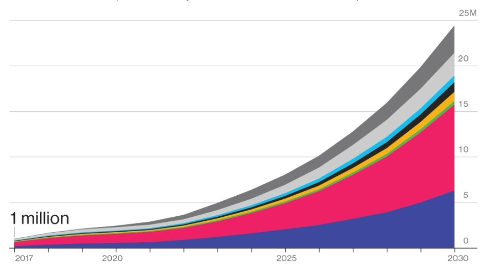
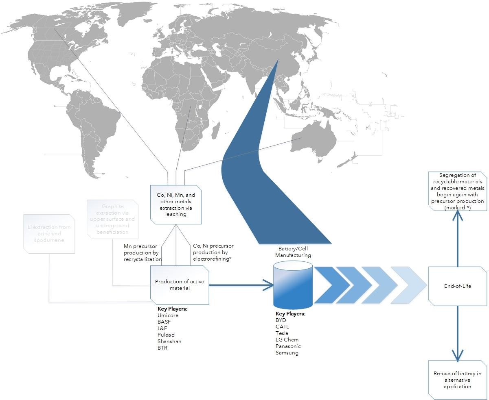
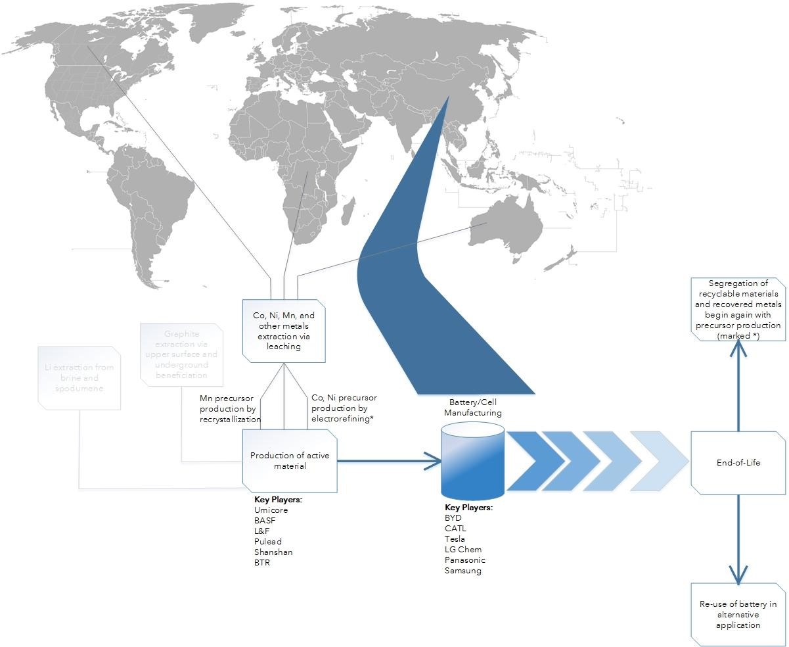

At its current stage of development lithium-ion batteries will likely power electric vehicles of the near future, and lithium-ion has already proven itself in the market for smaller batteries by powering the billions of consumer devices in our hands today. In order to put a dent in harmful emissions, several dominant automobile manufacturers, including GM, VW, and Volvo, have all vowed to make their fleets all-electric by 2030 at the latest. While boosting use of clean energy may ease pangs of guilt for those in the developed world concerned about the environment, recent news and publications have shed light on some distressing signs of human rights abuses that result from the sourcing of the materials needed in these batteries. These human rights abuses are what one would typically associate with blood diamonds or employment of young children in factories, not with socially-responsible green energy or Teslas. The (expected) meteoric rise of the lithium-ion industry and the resulting ethical dilemmas in many ways parallel those of the consumer electronics industry.  Source: Bloomberg New Energy Finance
Given the impending explosion and incessant drive for battery manufacturers to continue setting aggressive production goals, the expected demand from battery manufacturers has generated significant concern over geopolitical and environmental issues surrounding the sourcing of the metals in lithium-ion batteries. In order to understand how raw materials are sourced for the consumer products of the future, it is best to follow the pathway materials follow from within the earth to the hands of the consumer.
The following outlines the pathway from raw materials to assembled battery packs ready to be installed in EVs, smart phones, or hobbyist’s drones. (It can be tricky to track all of the suppliers and distributors that provide the precursors for the manufacture of active material, so the step from extraction to “Production of active material” is grossly oversimplified.)
 

Considering how quickly the technology evolves, assumptions must be made about the chemistry of lithium-ion batteries. Chemistries will predominantly contain nickel, cobalt, manganese, and aluminum metals.
In terms of the availability of lithium in reserves, lithium can be extracted from the earth’s crust in one of two ways: 1) from a hard rock known as spodumene, through a chemical leaching and extraction process; or 2) through brine extraction, in which the sun evaporates pools containing lithium brine. Regions of Australia account for the majority of lithium production by the former process. In contrast, the latter process is a less energy-intensive process, but requires month-long periods of evaporation and can only be employed in places where such lithium salt pools are available, primarily in the so-called “Lithium Triangle” of South America.
Significant media attention has focused on supplies of lithium salt used in batteries. However, Elon Musk is quoted as describing lithium as the “salt on the salad.” Deutsche Bank estimates that there are 185 years-worth of lithium reserves, so other critical metals are of much greater focus in research.
Nickel, manganese, aluminum have relatively stable markets beyond just the battery industry and have geographically well-distributed ore deposits, reasonable crustal abundance with limited depletion. Despite graphite extraction being geographically concentrated in China, there is untapped potential in deposits in India, Brazil, and throughout Africa1. Furthermore, graphite production can be augmented by synthetic processes.
In contrast to the other materials outlined, cobalt has potentially serious risk in its sourcing. Reserves of unrefined cobalt are clustered in mines in the Democractic Republic of Congo (DRC), which is politically unstable and has been rated as one of the least developed nations in the world by the UN. To exacerbate the geopolitical issues tied to cobalt extraction, approximately half of cobalt production in the DRC is paired with the extraction of nickel ores. Since the DRC is not a key player in nickel production on the world stage, if demand for nickel tapers off, the supply of cobalt will subsequently be restricted. Even a conservative estimate, which does not accommodate the ambitious targets set by Tesla and other EV manufacturers, places cobalt’s projected demand at 330 kilotons in 20251, far surpassing the projected supply of 180-290 kilotons of cobalt in 2025. Expansion of extraction projects in the future remains uncertain and significant bottlenecks in refining could hamper and slow delivery of EV production by months, if not years.
However, it would be naive to only consider the crustal abundance and not the human hands through which minerals must travel to get to the device you are holding in your hand. If battery manufacturers and their respective suppliers do not pay their due diligence in a proactive rather than reactive manner, regarding where they are getting their materials from, there could also be a looming publicity storm that puts VW’s ‘Dieselgate’ to shame.
The abundance of certain metals in deposits may be of concern in the long-term, but there are more important ethical considerations associated with the detrimental impact of mining on the environmental ecosystems and on the people in nearby communities.
In the case of cobalt extraction, there are extreme cases of human rights abuses. Extraction is dominated by unregulated artisanal mining, and unorganized groups of individual miners (in some cases children) are vulnerable to exploitation by armed militia groups that in turn profit off mining operations. Reports by the International Rescue Committee attribute 5.4 million deaths to the ongoing civil war that began in the DRC in 1998, making it the deadliest conflict since World War II. The unstable political climate has resulted in rampant corruption and general economic unrest. The DRC is resource-rich in mineral deposits, yet the average citizens earns the equivalent of $394.25 per year (2015 valuation of USD).
Artisanal mining is less expensive than industrial mining, but has proven to have a less than stellar human rights record since it lacks the regulation of industrial conglomerates. Cathode material suppliers and battery manufacturers have taken different approaches to mitigating the human toll upstream: while some manufacturers like Umicore have limited cobalt sourcing to industrial mines, others such as LG Chem have completely opted out of sourcing from the Congo. Institutionalizing mining operations and codifying mining regulations would also prompt other unrelated concerns, including the autonomy of miners in a country rich with natural resources where foreign multinational companies dominate the market and policy landscape. It was noted in a Washington Post article that many Congolese miners would sell their raw ore at markets managed by Asian men who would then coordinate shipping to China, where the majority of cobalt would eventually be headed for refining and for battery manufacture2.
While there are not such egregious cases of human rights abuses, there are similar parallels in South America, where multinational corporations have coordinated mining of various minerals pre-dating the 1970s. In the indigenous communities of Chile, Bolivia, and Argentina, lithium is primarily extracted from brine by evaporation that requires a half million gallons of water per ton of lithium salt, further exacerbating water scarcity issues in a region afflicted by extreme drought affects and arid conditions. While some of the mining companies have demonstrated educational and economic development efforts, many still argue that mining companies are simply exploiting their land until it no longer serves the desired purpose, giving back to the community only a fraction of the profits. Another Washington Post article, part of a series highlighting the human impact of today’s technology3, noted a lack of transparency in materials sourcing among big players in lithium-ion like Tesla and Samsung. Others such as Apple and Toyota have restated their obligation to ethical sourcing and have disclosed their list of lithium suppliers.
Extraction of nickel and graphite from the earth have well-documented detrimental environmental impacts, including contamination of water sources and deforestation as a result of mining. The consequences of lithium, nickel, and graphite mining are certainly not as grave. In the case of cobalt, the electronics industry could serve as a model for sourcing of minerals, even though there are still leaps and bounds in progress yet to be made.
Just like the multinational fruit companies in the Banana Republics could change the dynamics and political landscape of Latin America, today’s multinational tech giants have the same power, which will hopefully be used instead to influence significant positive change. Thanks in part to the appeal of watchdog groups such as the Enough Project and Amnesty International, there was a marked shift in the advanced electronics and microprocessor industries, when the spotlight was shown on the sourcing of their own materials. Specifically, Intel’s efforts led by their Director of Supply Chain Sustainability, Carolyn Duran, have culminated in 92% validated compliance among its refiners and smelters for mineral sourcing4. By 2014, Intel announced that all of its microprocessors were conflict-free. Intel has since reported minimal fluctuations in supply in the years following implementation and that compliance costs are less than expected.
Rather than simply abandoning sourcing from the Congo, which would have a serious detrimental impact to the people whose livelihood relies on mining, Intel sought to track mineral batches with a bag-and-tag system, pinpointing origination and funneling of various batches to large-scale refiners that can be more easily monitored. With a united front, electronics manufacturers (namely Intel, HP, Apple, and Motorola) collectively forced refiners and smelters to track each point in their own supply chain, stifling the business of non-compliant suppliers. The low-tech system was implemented through cooperation between a consortium of in-country non-governmental organizations (NGOs) and directives from the EU, the U.S. Security Exchange Commission, the UN Security Council, and the Electronic Industry Citizenship Coalition.
Under section 1502 of the Frank-Dodd Act, which broadly encompassed added consumer protections and reform of the “too big to fail” Wall Street financial system pre-2008, a provision required reports of sourcing for 3TG elements (tin, tantalum, tungsten, and gold). However, cobalt was not included as a conflict mineral of interest at the time.
Neither Intel’s bag-and-tag program nor the Dodd-Frank Act is without its share of critics. Dan Fahey, a member of the UN Investigations Team, was noted as saying that a 24/7 presence is necessary to ensure that militias are not present, levying taxes or outright extorting miners upon the inspector’s departure. The status of unorganized mines often changes by the day, and a lack of third-party inspectors on the ground does not help the situation, where fraud and profitability may be favored over ethics. Both Congolese and international experts have noted the low-tech system’s susceptibility to such examples of fraud, in which tons of minerals from a non-compliant mine can be smuggled and mixed with certified minerals just before a centralized distribution point such as a refiner or smelter. Furthermore, opponents of the Dodd-Frank Act claim that the legislation has merely put a damper on the laboring miners’ already meager income since there is a lag time required for certification and workers at uncertified mine are unable to sell their ore on the market5.
Regardless, the diligent efforts in the electronic industry to ensure ethical sourcing has triggered the aerospace, lighting, and jewelry industries to follow on a similar path in tracing back the impact of their materials. These lessons learned could be extended and applied to the battery industry as burdens on the supply chain continue to grow.
While the Trump administration considered suspending the Dodd-Frank Act under the banner of slashing government regulations, Apple, Intel, and numerous other companies rallied in support, noting that they would still carry-on with monitoring duties that ensure sourced minerals are conflict-free6. With the possible elimination of the legislative framework for the supply industry, some competitors may be enabled to release cheaper products with materials of questionable origin, ultimately leaving it up to the purchasing power of the consumer. However, consumer sentiment remains strong and will dictate which products survive on the market. According to a Nielsen study, approximately 51% of people aged between 21 and 34 would be willing to pay extra for sustainable products7.
One may consider the possibility of eliminating conflict minerals and other hard-to-source materials from the battery itself, but cobalt’s elemental nature imparts a high-energy density characteristic to batteries that makes it essential to its application in EVs. There are other elements with high theoretical energy densities with sizeable reserves, but fine-tuning batteries with these chemistries will take several years of development. In the mid-term outlook to 2025, there are two main alternative pathways to sustaining material supplies for clean energy: 1) employing recycling/recovery efforts and 2) tapping into underutilized resources. The EU, California, and New York have already established incentives programs for recycling of lithium-ion batteries. However, recycling of active materials in batteries in and of itself is an energy-intensive process, which necessitates materials segregation prior to even beginning the process. Due to the long lifetimes of batteries, material generated by recycling of spent batteries will likely be dwarfed by the total supply of raw, virgin material. However, with processing recovery rates of 93% and 98%, respectively for nickel and cobalt metal8, there is certainly an economic incentive to recover these high-impact materials. On the front of underutilized resources, various companies are working on sifting metals from wastewater, and technological developments in mining and remote-sensing techniques with the help of big data will aid in reducing land-use impact.
As technological developments continue to drive green technologies to the forefront, the collective experience and lessons learned in other industries will be invaluable in the sustainable extraction of critical resources necessary for the green revolution. However, this vision must not only be sustainable in terms of resource security, but also in terms of the community ecosystems they impact. A renewed confidence in the millennial generation has inspired movements that make the consumer more aware of the human impact of products we use and inform us to make purchasing decisions that enable change.
1E. A. Olivetti, G. Ceder, G. G. Gaustad and X. Fu, "Lithium-Ion Battery Supply Chain Considerations: Analysis of Potential Bottlenecks in Critical Metals," Joule, vol. 1, pp. 229-243, 2017.
2T. C. Frankel, M. R. Chavez and J. Ribas, "Cobalt mining for lithium ion batteries has a high human cost," The Washington Post, 30 September 2016. [Online]. Available: here. [Accessed 14 January 2018].
3T. C. Frankel, P. Whoriskey, M. R. Chavez and J. Ribas, "Indigenous people are left poor as tech world takes lithium from under their feet," The Washington Post, 19 December 2016. [Online]. Available: here. [Accessed 14 January 2018].
4P. Patel, "Intel's Carolyn Duran ensures conflict-free minerals supply chain," MRS Bulletin Features: Beyond the Lab, pp. 849-850, November 2016.
5C. Herrman and A. Kamat, "Are Intel's microprocessors really conflict-free?," Al Jazeera America, 14 November 2015. [Online]. Available: here. [Accessed 14 January 2018].
6T. C. Frankel, "Why Apple and Intel don't want to see the conflict minerals rule rolled back," The Washington Post, 23 February 2017. [Online]. Available: here. [Accessed 14 January 2018].
7Anne Taylor, "Global retail analysis shows increased sales for brands with sustainability claims on packaging or active marketing of corporate social responsibility efforts," The Nielsen Company, 17 June 2014. [Online]. Available: here. [Accessed 14 January 2018].
8P. Swart, J. Diwulf and A. Biernaux, "Resource demand for the production of different cathode materials for lithium ion batteries," Journal of Cleaner Production, vol. 84, pp. 391-399, 2014.